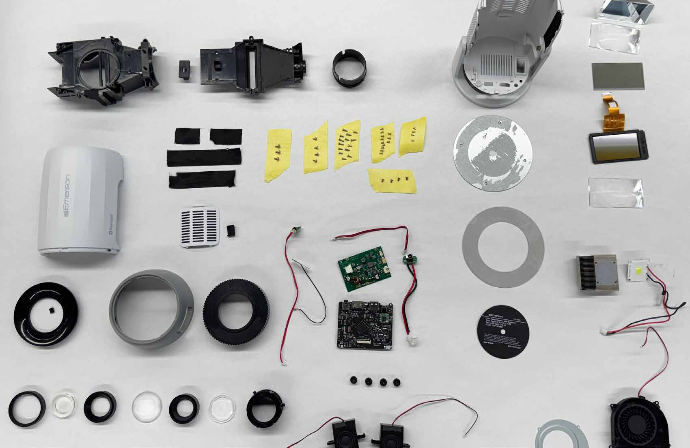
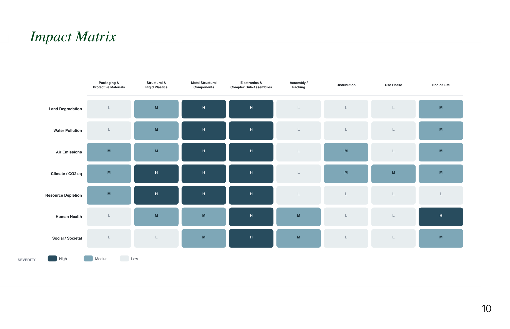
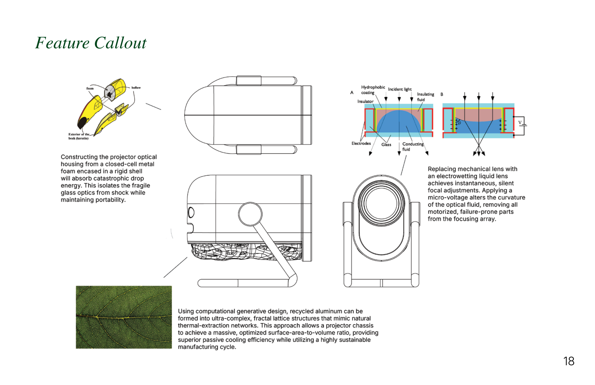
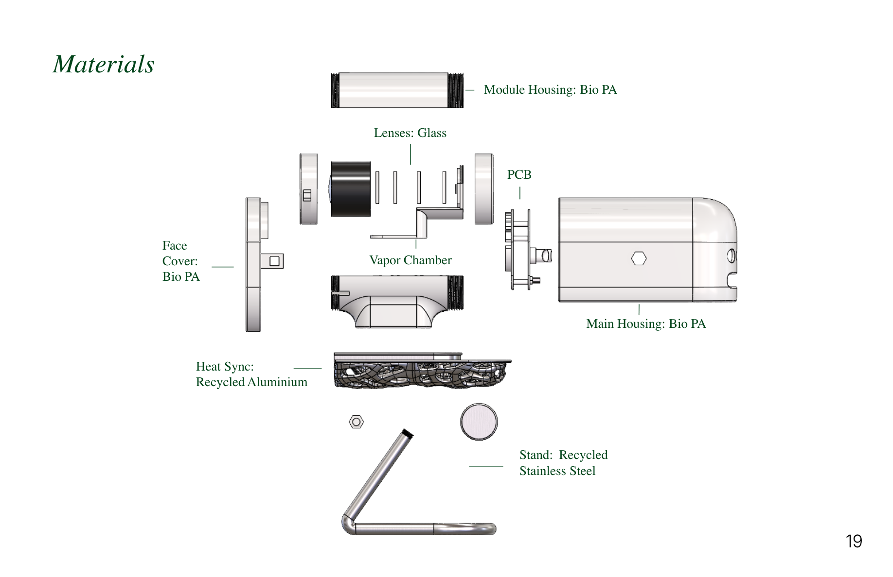
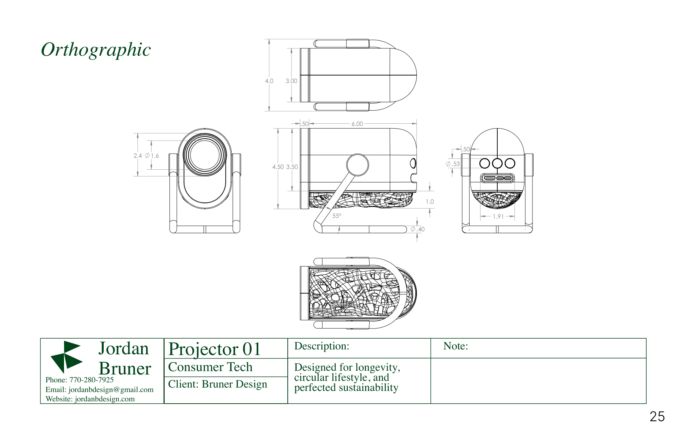
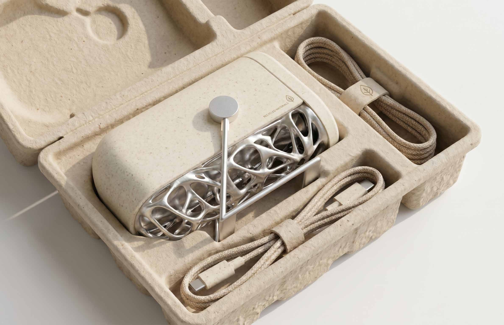
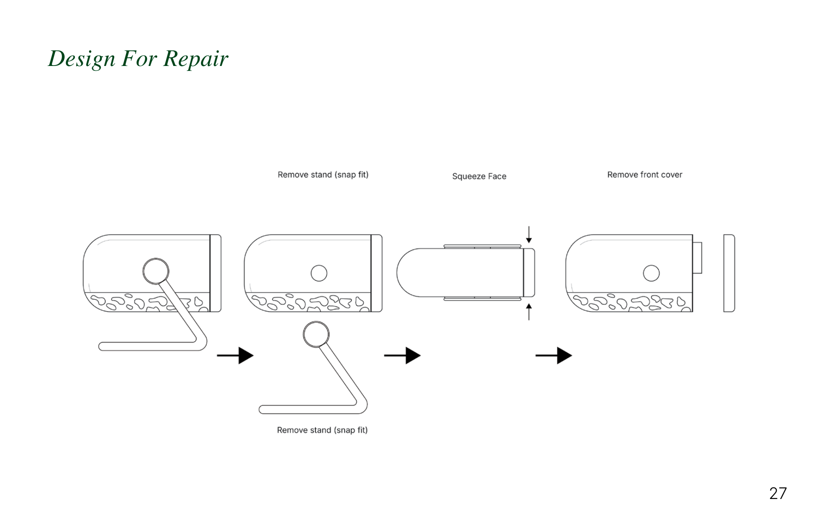
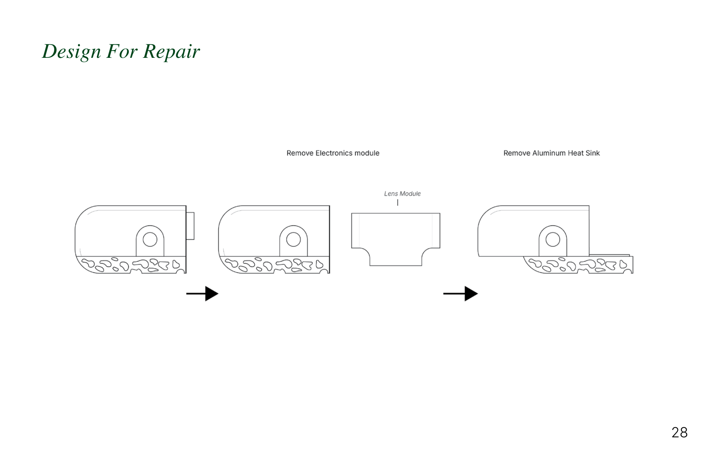

An Age of Disposability
We live with more access to more stuff than any generation before us — but that convenience carries a hidden cost.
Fast fashion, fast tech, fast everything — this convenience has made technology more accessible than ever, but at a cost. Electronic waste is now the fastest-growing waste stream globally, driven by short-lived consumer electronics and premature replacement. High-volume extraction of rare metals and fossil-fuel-based plastics creates a massive linear footprint, and improper disposal releases hazardous toxins into air and groundwater while packaging persists in ecosystems as microplastics for decades.

The Nomad Lifestyle: young renters who move constantly want a $150 portable theater, not a heavy, fragile 50-inch flat-screen TV.
Taking One Apart
A full teardown and life-cycle analysis of an existing budget projector, to find exactly where it fails.

Every part was mapped through a process tree — tracing material sourcing through production, use, and end of life — then scored in a life-cycle impact matrix across categories like emissions, water pollution, and resource depletion. Together, they show where a projector's environmental cost actually concentrates.


By weight, cardboard (288g), HIPS plastic (196g), and EPS foam (165g) dominate the teardown — but weight alone doesn't tell the sustainability story.
Mixed electronics (330g) are hardest to separate and carry the highest footprint per gram from mining and manufacturing, despite weighing less than the packaging. HIPS housing (196g) is petroleum-based and typically downcycled rather than recycled. Better alternatives: generative design, aluminum in place of plastic, and biomaterials.
The LED bulb lasts thousands of hours, but the cheap cooling fan fails first from dust — and once it dies, trapped heat melts the LCD screen. Plastic snap-tabs make it worse: they break off if you try to open the case at all.
What If We Can...
Extend the product's lifespan, reduce its manufacturing footprint, and make a consumer device more circular.

Ideation leaned on established design heuristic cards to force the concept in unfamiliar directions:
- Add Natural Features. Borrow forms and materials directly from nature.
- Allow User to Reorient. Let flipping or angling the object unlock new functions.
- Make Product Recyclable. Design for easy disassembly into recyclable materials.
- Substitute Way of Achieving Function. Swap a component for a different mechanism that does the same job.
- Use Repurposed or Recycled Materials. Turn waste streams into usable components.
Three features borrow from natural structures: a closed-cell metal foam housing, inspired by a bird's beak, isolates the optics from drop impact. A generative lattice heat sink, inspired by leaf veins, gives passive cooling enough surface area to skip the fan entirely. And an electrowetting liquid lens replaces the focus motor — a micro-voltage curves an internal fluid to focus instantly, removing the most failure-prone part in the original teardown.

Main housing, module housing, and face cover in Bio-PA; glass lenses and a vapor chamber for optical cooling; a heat sync in recycled aluminum; and a stand in recycled stainless steel.

The Finished Projector
The resolved form, in both colorways, then the drawings and packaging behind it.



Packaging carries its own footprint — the original teardown flagged EPS foam and mixed cardboard as some of the least sustainable, least biodegradable materials in the whole product. Molded pulp replaces both with a single compostable material, shaped to cradle the projector and its lattice heat sink without a scrap of foam.

Redesigned, Piece by Piece
Every major system rebuilt component by component, and the whole housing engineered to open without tools.
Remove the snap-fit stand, squeeze the face to release it, then lift off the front cover, the electronics module, the lens module, and the aluminum heat sink — no tools, no adhesive, no broken tabs.


What the Redesign Buys
Component by component, the redesign cuts materials CO2e by 72% and quadruples the product's minimum lifespan.
original design
redesign (72% lower)
original design
redesign
Modeled at 2 hours of use per day over 5 years. Materials and manufacturing improve dramatically, but electricity use during the product's life dominates any electronic device's footprint — which is why this number moves less than the component-level number above. It's also the case for repairability: a device that lasts 20 years avoids five replacements, not one.
over 5 years
over 5 years
same functional unit
lower impact
A product engineered to last only matters if the support around it lasts too — hardware that's fixable but undocumented still gets thrown out the first time something breaks. Pairing the physical redesign with an equally durable repair system is what actually turns a longer possible lifespan into a longer real one.
Every major failure point found in the teardown — the fan, the housing, the counterweight, the coated glass — was redesigned around a material or mechanism built to outlast it, cutting the product's component-level footprint by 72% and its minimum lifespan from years to decades. The result treats sustainability not as a finish applied at the end, but as the constraint that shaped every part from the start.